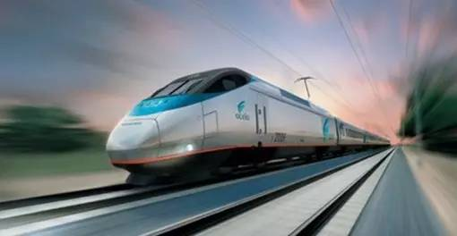
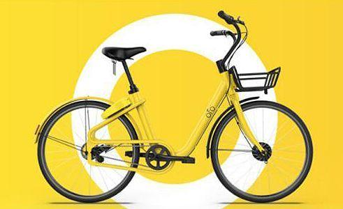
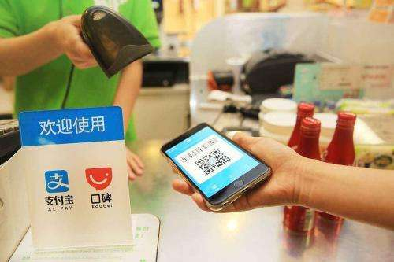

一千年前，“四大发明”的问世，大大促进了社会文明的进程。近来，来自二十多个不同国家的外国朋友票选出了心中的“中国新四大发明”。
“中国新四大发明”分别是：高铁、支付宝、网购、共享单车
高铁位居“中国新四大发明”之首。高铁（高速铁路）又一次大幅度提高了中国人民的出行速度，缩短了人们出行所需要的时间，改变了中国人民的生活。中国高铁是世界上速度最快的铁路系统，中国也是世界高铁商业运营速度最高的国家。中国现在已经基本建成了世界上最大的“四纵四横”高铁网络，而“八纵八横”高铁网络也已经规划完毕。中国在高速铁路上的突出成绩也让许多国家认可了中国铁路方面的制造实力，现在中国除了铺设规划本国的高速铁路网络之外，也为国外许多国家生产铁路相关产品和建造铁路。

以前人们外出必备三大件——“钱包、钥匙、手机”。现在，只需一个手机就够了，钱包和钥匙都可以用手机代替。现在几乎所有的商户都可以使用支付宝、微信等移动支付，手机一扫，钱已到账，非常方便。而且中国的移动支付也在一直进化，指纹支付、声波支付、刷脸支付等，让支付方式更加多样。而且，移动支付也登陆了国外许多国家和地区，同样让国外消费者的支付体验更加便捷。

作为“共享经济”的代表，共享单车已经成为第三大城市出行方式，实实在在地改变了我们的生活。以往出行除了开车之外，就只能乘坐公交、地铁等公共交通工具，而现在我们可以选择共享单车这种绿色低碳，节能环保的出行方式。而且，共享单车不仅遍布中国各大城市，也已经成功走向了海外。在美国、英国、德国、意大利等国家的街头都可以见到中国共享单车的身影。

网络购物改变了人们的购物方式，与传统的线下购物相比，现在的消费者更喜欢网上购物。只需手机轻轻一点，商品就会在几天之内送到。由网络购物也兴起了许多电商平台和物流公司。它们和消费者共同组成了中国庞大的网络购物生态，改变了人们的消费模式。网络购物不仅让消费者的购物体验更加方便快捷，也为国家的经济发展做出了巨大的贡献。